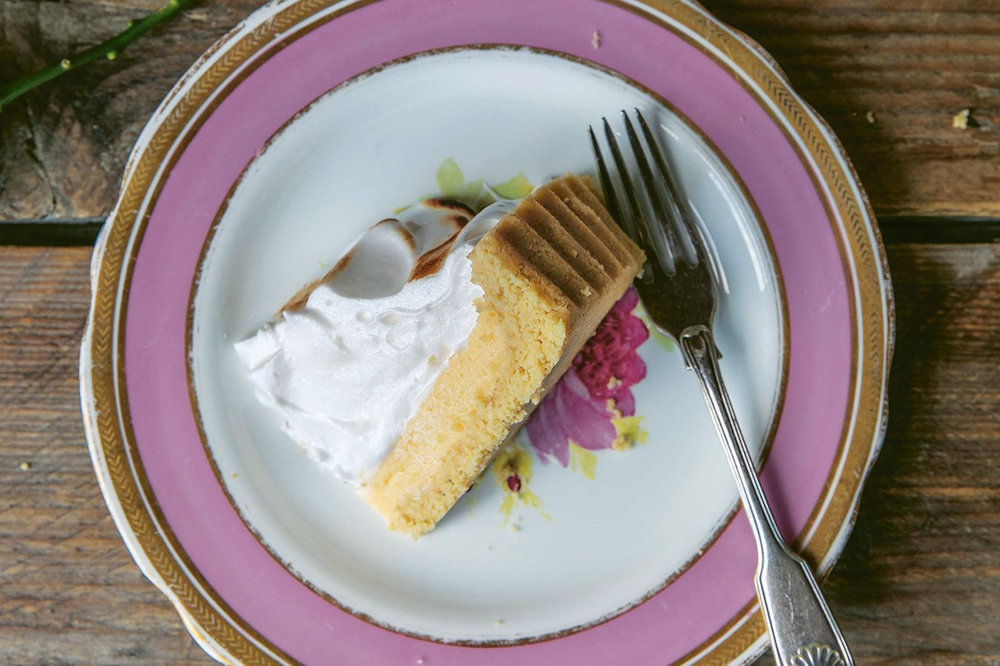
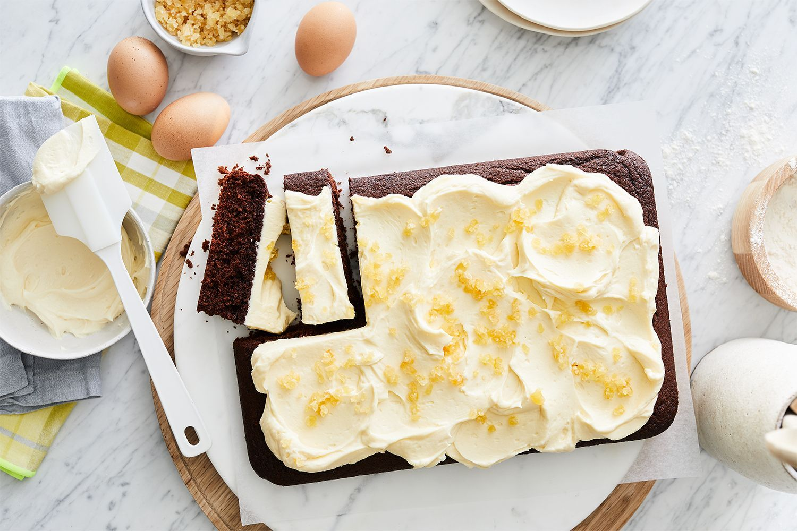

Pecan chocolate bread and butter pudding
This chocolate bread and butter pudding makes use of any leftover bread.
Baked ricotta cake
Ricotta is fantastic in desserts, and this cake is no exception. Begin this recipe 1 day ahead.
Pecan baklava rolls
Bring the Middle Eastern sweets counter to your home with Michael Rantissi's pecan baklava rolls.

lemon meringue pie
You will need a kitchen blowtorch for this delicious dessert recipe. This is an edited extract from A Table for Friends: The Art of Cooking for Two or Twenty by Skye McAlpine.

Coconut yoghurt cake
Zero waste tip: "When it comes to storing perishables like dairy, the freezer is your best friends. Milk and yoghurt can be stored in ice cube trays and popped out to use in smoothies." - Ronni Kahn.

ginger mud cake
“This cake melt-and-mix white choc and ginger mud cake is especially good served warm,” says Phoebe Wood.

Burnt butter, almond and honey cake
This gluten-free cake is the perfect answer to any afternoon tea questions.

Tart al limone
Citrus and dessert, a match made in Italy. Begin this recipe 4 hours ahead. You will need a kitchen thermometer.

Meatballs with creamy mushrooms & mash
Serve up this crowd-pleasing meal of meatballs in a creamy mushroom and thyme sauce. Enjoy with green veg and mash for a delicious family dinner.

Chocolate and ginger teacake
“Ginger, tea and dark chocolate are perfect partners for this rich teacake,” says Lucy Busuttil.

Banoffee cream pudding with white choc crumble
“Make sure the baking dish for the pudding fits inside a larger, high-sided pan for the water bath. Begin this recipe at least four hours ahead," says Phoebe Wood.

Sticky ginger pudding
You can never beat a pudding, unless it's spiced with ginger. And, don't forget the cream.